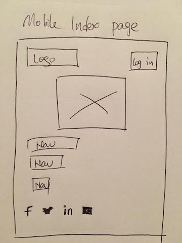
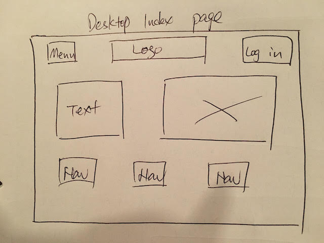
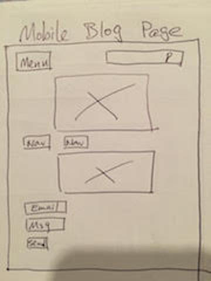

Blog - 3 Technical Blog
1) What a responsive site is, and why responsiveness is important?
Responsive web design creates a system for a single site to react to the size of a user’s device—with one URL and one content source. A responsive website has a fluid and flexible layout which adjusts according to screen size. Basically, your website will look great and work well on a desktop (or laptop), a tablet, and a mobile phone’s browser.
Responsive design can help you solve a lot of problems for your website. It will make your site mobile-friendly, improve the way it looks on devices with both large and small screens, and increase the amount of time that visitors spend on your site. It can also help you improve your rankings in search engines.
2) What mobile first design is, and why it's important?
Mobile first design is when we design a product, first we build a version for relatively lower browser (like that on a mobile phone). This version includes the most basic functions & features. After that we tend to the advanced version for a tablet or PC, which is created by adding interactions, more complicated effects, etc. on the basic version for a better user experience.
Mobile first design is a great way to refine the content on your site, making sure that those using a mobile device are only seeing the most essential information.
3) What frameworks are, and their pros and cons?
It actually depends on the context it is used. It can be defined as an abstraction tool that makes it easier to develop applications and reuse code.
By extracting the common traits and the application's underlying architecture and bundling them into a reusable template and collection of libraries, a framework allows developers to focus on what makes their project stand out.
Pros are Rapid Development, A Framework Makes Your Application More Secure, lower cost for the final client and stronger teamwork.
Cons are You learn the framework, not the language, limitation, and code is public.
4) What a wireframe is and why we use it?
Wireframes are simple black and white layouts that outline the specific size and placement of page elements, site features, conversion areas and navigation for your website.
Wireframing is that it provides an early visual that can be used to review with the client. Users can also review it as an early feedback mechanism for prototype usability tests. Not only are wireframes easier to amend than concept designs, once approved by the client and the users they provide confidence to the designer.
  
5)The aspects of your wireframes you found difficult to implement, and why?
i feel my actual wireframes are different to what i had draw, that may becuase i am still lack of knowledge and practicing.